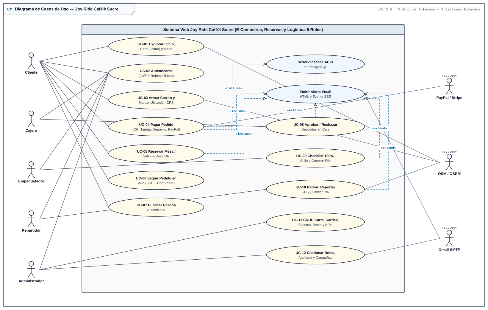
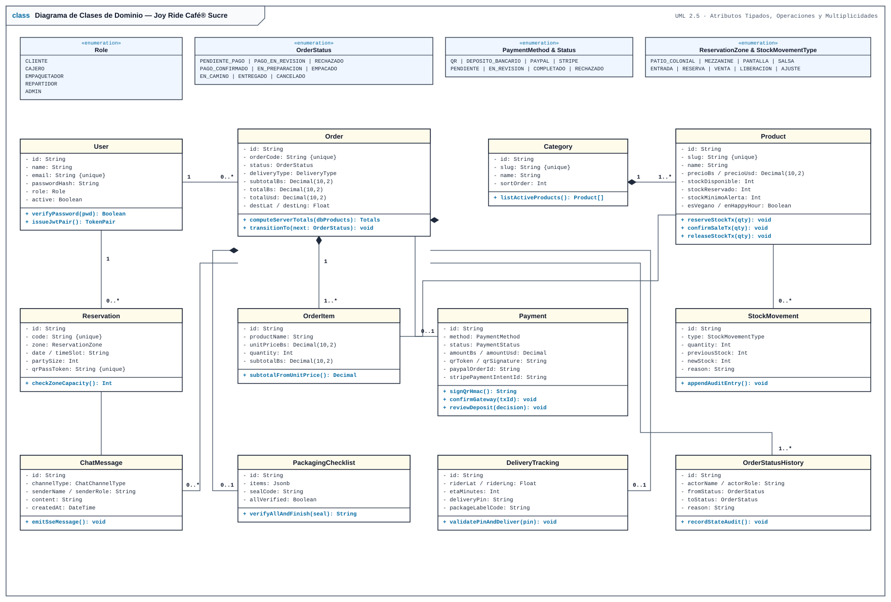
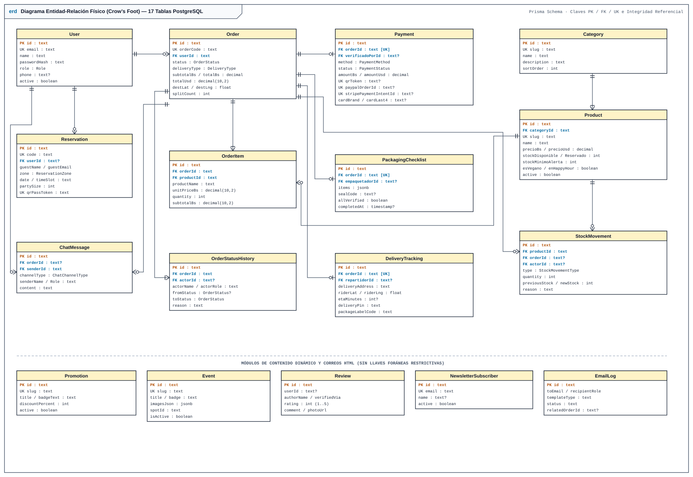
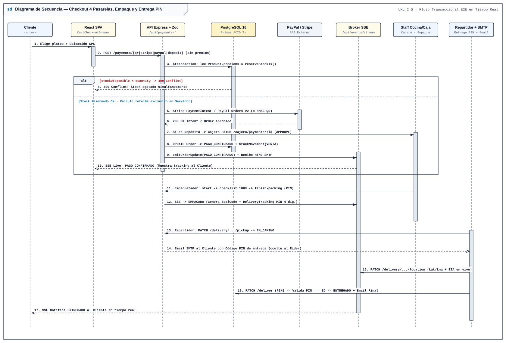
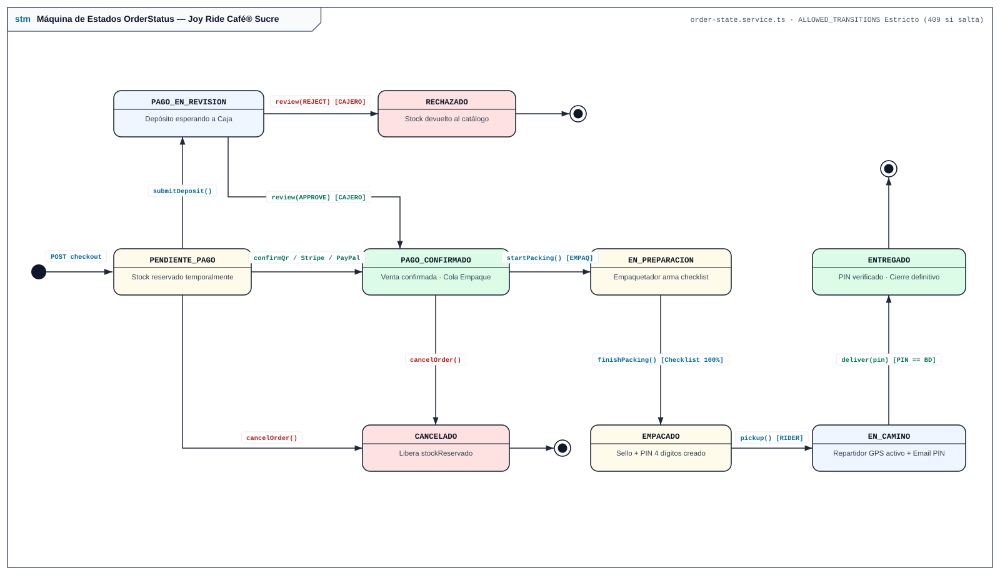
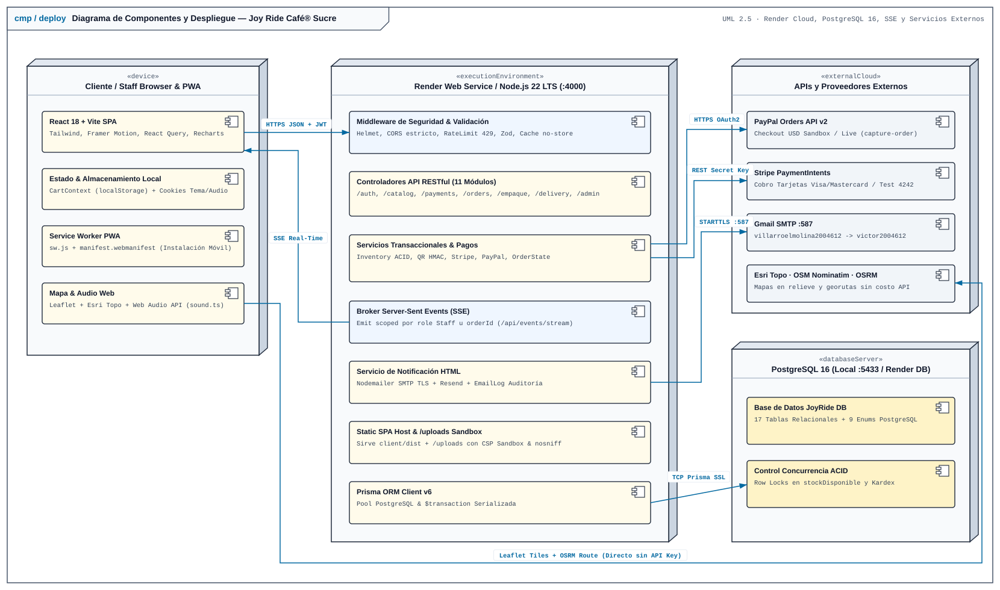

Fuentes Editables Estándar (Listas para Abrir en StarUML, dbdiagram.io, pgAdmin / DBeaver o PlantUML)
Muestra todos los actores humanos del negocio (Cliente, Cajero, Empaquetador, Repartidor, Administrador) y los sistemas externos (PayPal/Stripe, OSM/OSRM, Gmail SMTP), delimitando las dependencias «include» de reserva de stock ACID y «extend» de notificación en tiempo real.

Representa las clases núcleo del dominio, enumeraciones compartidas (Role, OrderStatus, PaymentMethod, ReservationZone), visibilidad de miembros, operaciones de negocio y relaciones de composición (Order *-- OrderItem) y asociación.

Modelo físico completo en notación Crow's Foot (pata de gallo) con llaves primarias (PK), llaves foráneas (FK), índices únicos (UK) y cardinalidades exactas de todas las tablas definidas en server/prisma/schema.prisma.

Describe paso a paso la ejecución en tiempo real desde que el cliente confirma su pedido (sin enviar precios desde el navegador), pasa por el bloque transaccional alt de concurrencia de stock, procesa cualquiera de las 4 pasarelas y recorre SSE hasta validar el PIN de 4 dígitos en destino.

Autómata finito estricto validado en servidor: cualquier intento de saltar etapas (por ejemplo pasar de PENDIENTE_PAGO a ENTREGADO o cerrar entrega sin PIN válido) es rechazado con HTTP 409 Conflict.

Detalla los nodos físicos de ejecución: navegador/PWA con Service Worker e Indexed/LocalStorage, nodo Web Service en Render (Node.js 22 LTS + Express 4 + SSE + client/dist), base de datos PostgreSQL 16 administrada y nubes externas (PayPal, Stripe, Gmail SMTP y Esri/OSRM sin costo de API Key).
